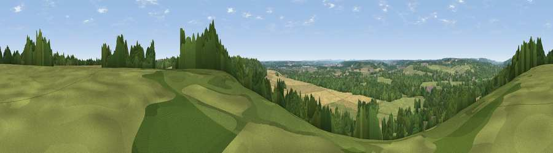

Viewpoint near Tidmarsh
#36469 in England · top 34% of its area beats it · near Tidmarsh · path 282 mWhere it is
The exact computed spot (SU 64825 74175). Click the marker for map links.
Public access: the nearest public right of way is about 282 m away — the final stretch may cross private land. Computed from Natural England's CRoW access layer and OpenStreetMap rights of way — not the legal definitive map. Always verify locally.
The view, rendered

A 360° render of this exact spot computed from the terrain model, tree cover and land cover — summer colours, afternoon light, calibrated against photographs of famous viewpoints. Real trees, hedges and buildings will differ in detail.
The panorama
Grey silhouette: terrain skyline in each direction (720 bearings, Earth curvature and refraction included). Dashed green: skyline with trees (+15 m) and buildings (+8 m) as obstacles. Blue strip: how far the ground is visible on each bearing.
Where the view opens
Wedge length = distance to the farthest visible ground on that bearing (vegetation-aware). Rings at 10, 25 and 50 km.
What fills the view
40% grassland · 34% woodland · 23% cropland · 2% built-up
Angular shares of the visible panorama (visual magnitude), not map area. Landscape diversity 0.51 (0–1 Shannon).
Key numbers
More beautiful places nearby
The staircase of upgrades: each row has a higher view potential than everything closer. Driving times are estimates from straight-line distance, calibrated against real road routing — check an actual route before setting out.
| Place | Direction | Drive | Score |
|---|---|---|---|
| Viewpoint near Theale | SSE · 2 km | ~4 min | 31.8 |
| Viewpoint near Whitchurch-on-Thames | N · 4 km | ~8 min | 33.9 |
| Viewpoint near Whitchurch-on-Thames | NNW · 4 km | ~9 min | 47.5 |
| Viewpoint near Streatley | NW · 9 km | ~18 min | 57.2 |
| Viewpoint near Moulsford | NW · 11 km | ~21 min | 58.8 |
| Viewpoint near Compton | NW · 13 km | ~25 min | 64.1 |
| Viewpoint near Cookley Green | N · 17 km | ~30 min | 64.3 |
| Viewpoint near Cookley Green | NNE · 18 km | ~31 min | 68.5 |
51.46284, -1.06826 · source: screening · position refined by local search. Computed location — check access rights before visiting.